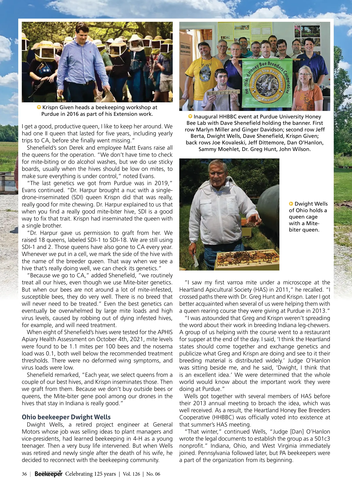

I get a good, productive queen, I like to keep her around. We
had one II queen that lasted for five years, including yearly
trips to CA, before she finally went missing.”
Shenefield’s son Derek and employee Matt Evans raise all
the queens for the operation. “We don’t have time to check
for mite-biting or do alcohol washes, but we do use sticky
boards, usually when the hives should be low on mites, to
make sure everything is under control,” noted Evans.
“The last genetics we got from Purdue was in 2019,”
Evans continued. “Dr. Harpur brought a nuc with a single-
drone-inseminated (SDI) queen Krispn did that was really,
really good for mite chewing. Dr. Harpur explained to us that
when you find a really good mite-biter hive, SDI is a good
way to fix that trait. Krispn had inseminated the queen with
a single brother.
“Dr. Harpur gave us permission to graft from her. We
raised 18 queens, labeled SDI-1 to SDI-18. We are still using
SDI-1 and 2. Those queens have also gone to CA every year.
Whenever we put in a cell, we mark the side of the hive with
the name of the breeder queen. That way when we see a
hive that’s really doing well, we can check its genetics.”
“Because we go to CA,” added Shenefield, “we routinely
treat all our hives, even though we use Mite-biter genetics.
But when our bees are not around a lot of mite-infested,
susceptible bees, they do very well. There is no breed that
will never need to be treated.” Even the best genetics can
eventually be overwhelmed by large mite loads and high
virus levels, caused by robbing out of dying infested hives,
for example, and will need treatment.
When eight of Shenefield’s hives were tested for the APHIS
Apiary Health Assessment on October 4th, 2021, mite levels
were found to be 1.1 mites per 100 bees and the nosema
load was 0.1, both well below the recommended treatment
thresholds. There were no deformed wing symptoms, and
virus loads were low.
Shenefield remarked, “Each year, we select queens from a
couple of our best hives, and Krispn inseminates those. Then
we graft from them. Because we don’t buy outside bees or
queens, the Mite-biter gene pool among our drones in the
hives that stay in Indiana is really good.”
Ohio beekeeper Dwight Wells
Dwight Wells, a retired project engineer at General
Motors whose job was selling ideas to plant managers and
vice-presidents, had learned beekeeping in 4-H as a young
teenager. Then a very busy life intervened. But when Wells
was retired and newly single after the death of his wife, he
decided to reconnect with the beekeeping community.
“I saw my first varroa mite under a microscope at the
Heartland Apicultural Society (HAS) in 2011,” he recalled. “I
crossed paths there with Dr. Greg Hunt and Krispn. Later I got
better acquainted when several of us were helping them with
a queen rearing course they were giving at Purdue in 2013.”
“I was astounded that Greg and Krispn weren’t spreading
the word about their work in breeding Indiana leg-chewers.
A group of us helping with the course went to a restaurant
for supper at the end of the day. I said, ‘I think the Heartland
states should come together and exchange genetics and
publicize what Greg and Krispn are doing and see to it their
breeding material is distributed widely.’ Judge O’Hanlon
was sitting beside me, and he said, ‘Dwight, I think that
is an excellent idea.’ We were determined that the whole
world would know about the important work they were
doing at Purdue.”
Wells got together with several members of HAS before
their 2013 annual meeting to broach the idea, which was
well received. As a result, the Heartland Honey Bee Breeders
Cooperative (HHBBC) was officially voted into existence at
that summer’s HAS meeting.
“That winter,” continued Wells, “Judge [Dan] O’Hanlon
wrote the legal documents to establish the group as a 501c3
nonprofit.” Indiana, Ohio, and West Virginia immediately
joined. Pennsylvania followed later, but PA beekeepers were
a part of the organization from its beginning.
Krispn Given heads a beekeeping workshop at
Purdue in 2016 as part of his Extension work.
Inaugural HHBBC event at Purdue University Honey
Bee Lab with Dave Shenefield holding the banner. First
row Marlyn Miller and Ginger Davidson; second row Jeff
Berta, Dwight Wells, Dave Shenefield, Krispn Given;
back rows Joe Kovaleski, Jeff Dittemore, Dan O’Hanlon,
Sammy Moehlet, Dr. Greg Hunt, John Wilson.
Dwight Wells
of Ohio holds a
queen cage
with a Mite-
biter queen.
36 |
Celebrating 125 years | Vol. 126 | No. 06